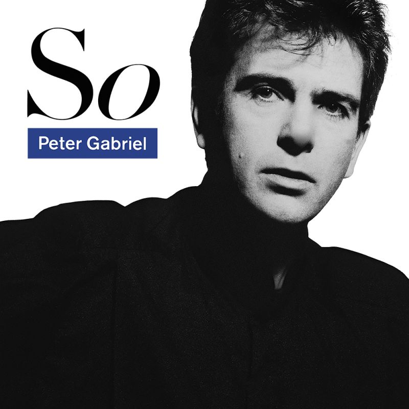

Posted on 2025-02-09 · 4 min read · Twenty Five · Music · Album Revisit · Peter Gabriel · Pop · Rock
I recently watched the entry about Peter Gabriel’s 1986 album “So” in the Classic Albums series on Amazon Prime. It was an entertaining way to fill an evening hour.
I absolutely love “So”. I came to its songs via the “Secret World Live” album, and it was “Red Rain” specifically that convinced me of his greatness. Previously, I’d been aware of “Sledgehammer” (also on this album) and “Steam” (from the similarly titled “Us”), but “Red Rain” really captured my imagination.
“Secret World Live” was released in 1994, so it won’t surprise you that it was another of those albums that I bought on cassette and wheeled around doing my paper round to. It’s actually double album (though released on a single cassette) so I would listen to each side on alternate days. The only songs from “So” on the live album are “Red Rain”, “Sledgehammer” and “Don’t Give Up”. (“Mercy Street” was also on the “Red Rain EP” but I hadn’t quite got into singles as much back then so I missed it, but given how much I love “Mercy Street” I can’t help but think it would have been a massive shortcut.)
Fast forward about ten years and one of my PhD colleagues and I are chatting about music. Two artists he really likes are Prince and Peter Gabriel. He loans me some definitely legitimately acquired CD-ROMs full of MP3s that comprise the majority of both artists back catalogues. The three major revelations to me are “Around The World In a Day” by Prince, and “So” and “Up” by Peter Gabriel.
“So” begins with the three songs I already knew, which is probably why I put it on in the first place. The next song is “That Voice Again” which, tellingly, had precisely no time devoted to it in the documentary. Considering that “So” consists of 9 songs and took a year to make, that’s quite a snub. It’s a nice song and Peter Gabriel revisited that sort of song quite a lot on “Us” and “Up”.
Then there’s “In Your Eyes” which now I think about it is also on “Secret World Live” but there it’s an extended jam session as a way of saying goodnight to the audience. Hearing it in ‘proper’ form for the first time was a revelation. Fun fact: when “So” was reissued on CD, “In Your Eyes” was moved to the end. For the original vinyl release it had to go at the start of side 2, so that the bass lines sounded better.
Then there’s “Mercy Street” which just blew me away. It’s a great song. One way of confirming this is to listen to covers of it. There’s one by Elbow, which is great, and there’s one by Fever Ray, which is also great. As time has passed and I have seen the lyrics and learned what the song is really about, that has taken some of the mystery away from it a bit. When I first heard it, it was this massive mystery, and I think that even now the experience of listening to it is me connecting back to that sense of mystery.
It took me a bit longer to appreciate “Big Time” for the great song that it is. I enjoy the self-deprecating aspects of the song a lot more now that I am older. To the younger me, it sounded boastful, but now I hear a weird insecurity running through it.
I also really like “We Do What We’re Told” because for my PhD I studied a lot of network analysis, and even though Milgram’s work about control and how people live up (or down) to the roles society assigns to them was tangential (at best) to my work, I still enjoyed the connection to this song. Similarly, “This is the Picture”, which is more of an arty performance piece that was added to the album later. I am a big fan of spoken word tracks.
So yes, I do love “So”. It was fun to watch the documentary, even if they didn’t manage to get Kate Bush on to talk about her beautiful part on “Don’t Give Up”. Of course, I learned to love Paula Cole’s rendition of it on “Secret World Live” and Kate Bush’s original was utterly sublime. The album is so good, by equal turns serious and fun, it skews happy but with dark shadows cast too. It will be 40 years old next year but if you put it on you’ll swear it could have been made yesterday. It’s one for the ages.
